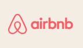

EMPRESAS DE TODO EL MUNDO YA CONFIAN EN SLACK


Reunir a todos tus compañeros, herramientas y comunicacion en un mismo lugar te permitira trabajar de manera mas rapida y eficiente que nunca.

Los canales son el corazón de Slack. Son espacios organizados para todo el mundo que contienen todo lo necesario para trabajar. Los canales permiten conectarse entre departamentos, oficinas, zonas horarias e incluso con otras empresas.
Obtener mas informacion sobre los canales
Slack te otorga la flexibilidad para trabajar cuando, donde y como tú quieras. Puedes chatear, enviar clips de audio y vídeo o unirte a una junta para discutir asuntos en directo.
Obten mas informacion acerca de la comunicacion flexibleConectar tus otras aplicaciones de trabajo con Slack te permite ahorrar tiempo al no tener que cambiar entre pestañas. Además, con herramientas eficaces como el Creador de flujos de trabajo, puedes automatizar tareas rutinarias.
Mas informacion sobre la plataforma de SlackSlack se adapta de forma segura para garantizar la colaboración en las empresas más importantes del mundo.
de usuarios afirma que Slack ha mejorado la comunicacion
creen que su capacidad para trabajar a distancia ha mejorado
se sienten mas conectados con sus equipos
“Hemos podido crear una amplia red virtual de empleados que se pueden comunicar como si estuvieran juntos. Hubo bastantes problemas sobre dónde trabajábamos, pero no sobre el cómo”.
Mark Smith Responsable tecnico senior de Productos, T-Mobile Ver mas casos de clientes --->* Promedio ponderado. Basado en una encuesta de 2707 respuestas de usuarios semanales de Slack en Estados Unidos, Reino Unido, Australia y Canadá, con un margen de error de ± 2 % al 95 % CI (diciembre de 2021).